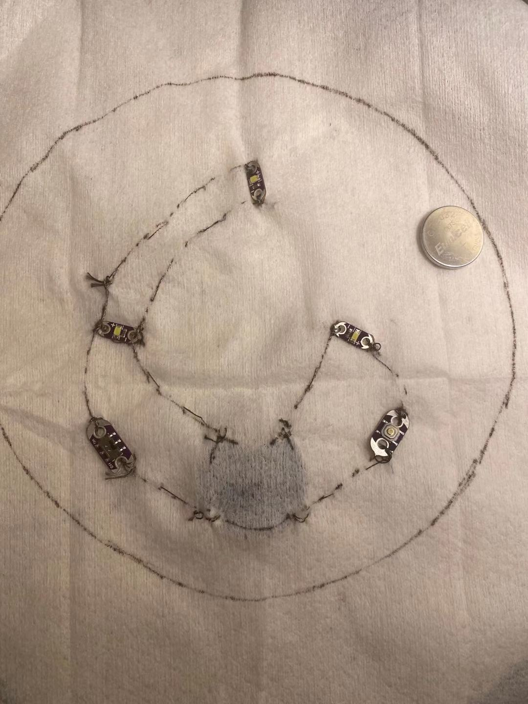
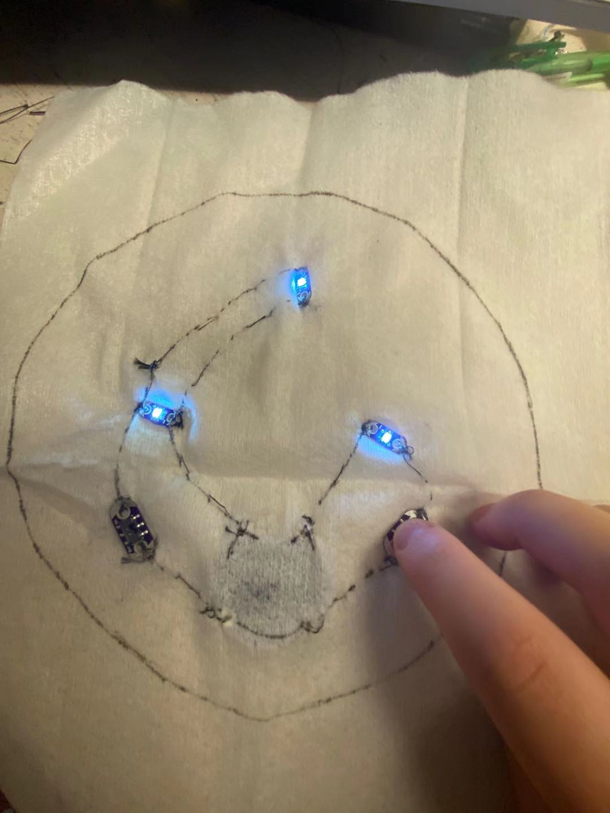
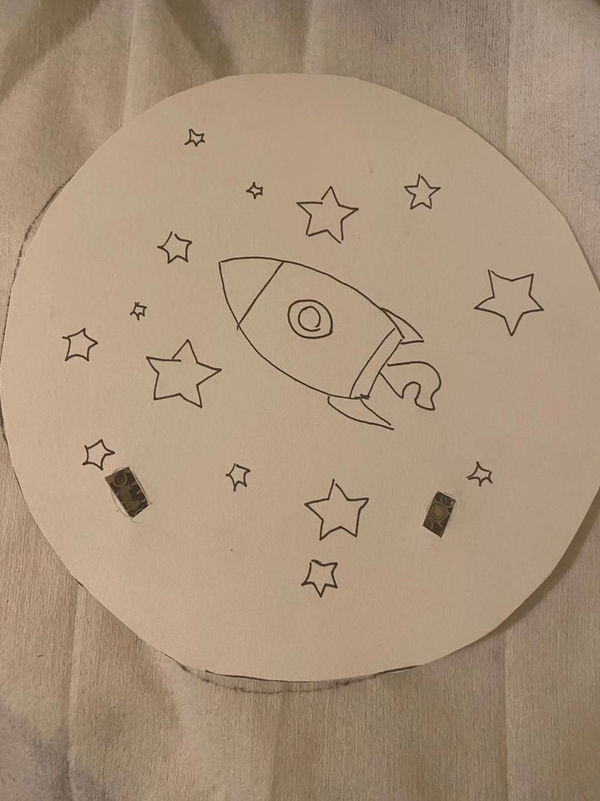

For this project, I decided to use one of the templates provided to make my e-sewing creation. I started off by sketching out the circuit on a piece of fabric and gluing all the components onto the fabric so they won't move around when I'm sewing.
I then got to do the actual sewing part. It wasa very chellenging and took me forever... Given that I had no previous experience about sewing even with regular thread, I had to watch a bunch of tutorial on making the knots and running the thread. I constantly messed up my thread and had to cut it off and restart. Thankfully, it turns out a bit ugly but working well!
I the created a simple drawing to show the pattern. I wasn't able to get a lot of different fabric so I just did it on a piece of paper. I make two holes for the button and switch, and here's how it looks like.
This is the final product! If I were to do this agian, I would definitely make my threading better so there're no random spare threads everywhere. I'm pretty surprised that it ends up actually working, and I had no problem when testing out the circuit. Also, it would be nice to have fabrics in different colors and materials so I can create a more finished product as shown in the template.